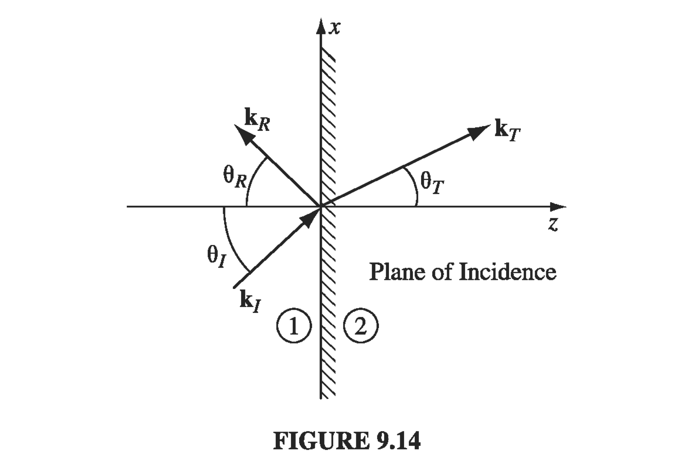

9.3: Electromagnetic Waves in Matter#
9.3.1: Propagation in Linear Media and Non-conductors#
Maxwell’s equations in linear media are
In linear media, our constitutive relations are
and
In charge-free region, the Maxwell equations in linear media look a lot like those in vacuum
So that’s nearly identical, except where we had \( \epsilon_0 \) now we have \( \epsilon \), and where we had \( \mu_0 \) now we have \( \mu \), so we can make these same substitutions in the solutions. The resulting wave equations in linear matter are
where now the speed is
where
9.3.2: Reflection and Transmission at Normal Incidence#
On of the most simple interesting situations that can arise when the index of refraction changes is when light crosses a sudden interface, i.e., what happens when light passes from one transparent medium into another? As in the case of waves on a string, we expect to get a reflected wave and a transmitted wave. Suppose we have waves incident on the boundary (in the x-y plane) between two media, call the media “1” and “2” with indices of refraction \( n_1 \) and \( n_2 \). The z-axis is normal to the boundary.

Let’s write our incident wave \( \vec{E_I} \) in so-called “phasor notation” (just complex exponential notation)
where the actual wave itself is the real part of the complex exponential. We define the magnetic field in the same way
We write down similar expressions
for the reflected wave, and
for the transmitted wave. At the \( z = 0 \) plane
That’s true for all \( x, y \) on the interface and for all time, so this immediately implies that \( \omega \) has to be the same for each of the waves (we already implicitly assumed this in the notation). So the \( \omega t \) terms drop out of all three terms, and we can focus on the wavenumbers. It has to be the case that
where so far there is no restriction on \( k_z \). We can simply orient our \( x-z \) axes such that \( \vec{k_I} \) lies in the \( x-z \) plane. This means that \( \vec{k_R} \) and \( \vec{k_T} \) will also lie in the plane, and
9.3.3 Reflection and Transmission at Oblique Incidence#
In the more general case where the incoming wave hits the boundary at some angle \( \theta_I \). Suppose that a monochromatic plane wave
approaches from the left. We’ll get a reflected wave
and a transmitted wave
All three waves have the same frequency \( \omega \). The three wave numbers are related by
The combined fields in medium 1, \( \vec{E_I} + \vec{E_R} \) and \( \vec{B_I} + \vec{B_R} \) must be joined to the fields in medium 2 using the boundary conditions we get from Maxwell’s equations. All of the boundary conditions share the generic structure
For now the important thing to notice is that the x, y, and t dependence is confined to the exponents. Because the boundary conditions must hold at all points on the plane, and for all times, these exponential factors must be equal at the boundary.
or
for all x and y, which can only be true if all both components are separately equal. So we may as well orient our axes so that \( \vec{k_I} \) lies in the \( x-z \) plane - our boundary condition ensures that if we do that, \( \vec{k_R} \) and \( \vec{k_T} \) will also lie in the plane.
!!! theorem “The incident, reflected, and transmitted wave vectors form a plane (called the plane of incidence), which also includes the normal to the surface.”
We can also say that
where \( \theta_I \) is the angle of incidence, \( \theta_R \) is the angle of reflection, and \( \theta_T \) is the angle of transmission, or more commonly the “angle of refraction,” all of them measured with respect to the normal.
!!! theorem “The angle of incidence is equal to the angle of refraction \( \theta_I = \theta_R \)“
And as for the transmitted angle
!!! theorem “The law of refraction: \( \frac{\sin \theta_T}{\sin \theta_I} = \frac{n_1}{n_2} \)“
So our exponential factors are dealt with, and we can move on to the Maxwell boundary conditions
where \( \vec{B}_0 = \frac{1}{v} \hat k \times \vec{E}_0 \) in each case.
If we now suppose the plane-polarized case, in which the polarization of the incident light is parallel to the plane of incidence, it follows that the reflected and transmitted waves are also polarized in this plane. Then (i) reads
and (iv) says
We can reduce these down to
where \( \beta \) is defined as
and \( \alpha \) is
Solving for the reflected and transmitted amplitudes, we obtain
These are the Fresnel’s equations for the case of polarization in the plane of incidence. Note that the transmitted wave is always in phase with the incident one; the reflected wave is either in phase (“right side up”) if \( \alpha > \beta \), or \( \pi \) out of phase (“upside down”) if \( \alpha < \beta \)
Of note is the interesting incident angle \( \theta_B \) where the reflected wave is completely extinguished. That happens when \( \alpha = \beta \), or
In a typical case \( \mu_1 \approx \mu_2 \) and \( \beta \approx n_2 / n_1 \) so \( \sin^2 \theta_B \approx \beta^2 / (1 + \beta^2) \) or
For s-polarized fields (i.e., the electric field is polarized perpendicular to the plane of incidence),
To finish things up, let’s look at the intensity of the reflected and transmitted waves, since that’s what we’re generally measuring directly. The intensity depends on the electric field magnitude and the index of refraction
We get reflection and transmission coefficients defined as:
Plugging in our previous expressions for the incoming and reflected fields,
and the transmitted field,
We should check that \( R + T = 1 \), since we haven’t got any absorption in our scenario: